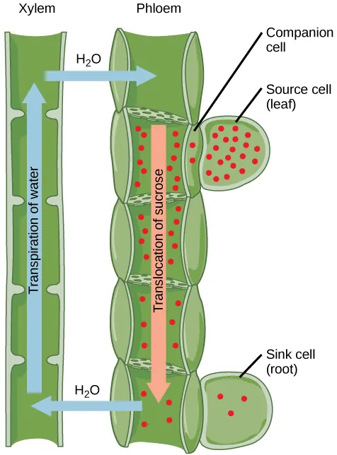
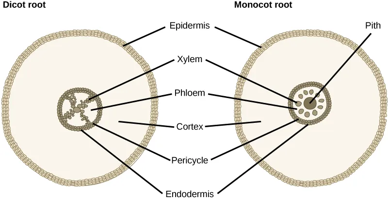
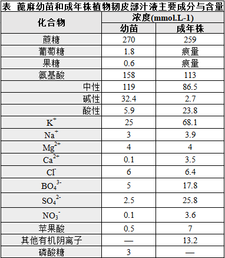

高中生物竞赛讲义 · 集训营
第九章 植物的生命活动
章节总纲 · 四、植物体内的物质运输
📅 整理日期: 2026年7月4日
四、植物体内的物质运输
在讲有机物如何"装入"筛管之前,必须先理解筛管"长什么样"。本节是 §(二) 有机物质运输的解剖学基础 。参考:奥赛讲义 第七章 第一节 植物组织 §2 输导组织(P323-P326),整合 5 类输导分子的形态与功能差异。
输导组织(conducting tissue) 是植物体内专门负责长距离运输 的一类组织,主要包括木质部(xylem)的输水分子 与韧皮部(phloem)的输养分子 两套系统:
高中衔接:高中只笼统说"植物通过导管运输水和无机盐、通过筛管运输有机物",本节把"管胞 vs 导管""筛胞 vs 筛管 vs 伴胞"的解剖学差异讲清楚——是奥赛必考、也是理解 §(二) 同化物运输(源端装载)的前提。
管胞 是绝大多数蕨类植物和全部裸子植物 的主要输水结构,也是被子植物木质部中 的辅助输水结构。形态特征:
长梭形(纺锤形)死细胞,长 0.1-3 mm,直径 10-50 μm
细胞成熟时原生质体完全消失 (死细胞),仅剩细胞壁
细胞壁次生加厚(木质化) ,有 5 种加厚方式(图 7-1-5):
环纹(annular) :加厚呈环状,管胞幼嫩时存在螺纹(spiral) :加厚呈螺旋状梯纹(scalariform) :加厚呈横条阶梯状网纹(reticulate) :加厚呈网状孔纹(pitted) :加厚几乎全面,仅留少量未加厚的具缘纹孔 (bordered pit)
两端尖锐,无穿孔 ,通过侧壁的具缘纹孔(bordered pit) 与相邻管胞沟通——水必须穿过纹孔膜(torus-margo 结构),输水效率低 管胞同时兼有支持作用 (壁厚且木质化),所以裸子植物木材几乎由管胞构成(如松木)
📌 具缘纹孔(bordered pit) 的关键结构:纹孔四周的次生壁向中央隆起形成"缘",中央只有初生壁和胞间层组成的纹孔膜(由 torus 中央加厚盘 + margo 周围网状纤维构成) 。当一侧压力过低时,torus 偏向低压侧堵塞纹孔口——防止气泡从受损管道扩散到健康管道 (这叫纹孔塞作用 )。
💡 管胞的"具缘纹孔"是奥赛高频考点:纹孔膜 torus-margo 结构能"单向阀"防气泡扩散——松柏类木材的"管胞+具缘纹孔"组合既输水又支撑,且在受伤时能"自我封闭"防止空穴化(embolism)扩散。
导管 是被子植物(以及少数裸子植物如买麻藤目)特有的输水结构 。由多个导管分子(vessel element)端对端连接形成 的管状结构,直径 20-500 μm(比管胞粗)。形态特征:
每个导管分子也是死细胞 (成熟时原生质体消失,只剩木质化细胞壁)
两个相邻导管分子之间的端壁发育成穿孔板(perforation plate) ——这是与管胞的本质区别
穿孔板有 3 种类型:
单穿孔(simple perforation) :端壁完全打通(只有一个大孔),输水阻力最小——最进化 梯状穿孔(scalariform perforation) :端壁上有多个平行长条状穿孔——介于单穿孔和原始类型之间麻黄式穿孔(foraminate perforation) :端壁上有多个圆形穿孔(类似筛板)——原始类型
侧壁也有 5 种加厚方式(与管胞相同):环纹→螺纹→梯纹→网纹→孔纹
管胞 vs 导管的核心对比:
分布 :管胞见于所有维管植物;导管只见于被子植物和少数裸子植物 结构 :管胞是单个细胞 ;导管由多个细胞连接 形成管端壁 :管胞无穿孔板,水需通过具缘纹孔横穿;导管有穿孔板,水可纵向直接流通 直径 :管胞较细(10-50 μm);导管较粗(20-500 μm)输水效率 :管胞低;导管高出数十倍到数百倍 ——这是被子植物能长成高大乔木的关键进化支持作用 :管胞有;导管几乎没有 (导管分子死后形成空管,需要纤维提供支持)进化关系 :管胞是原始类型 ,导管是由管胞演化而来 ——是维管植物进化史上的重大创新
💡 奥赛必背:"管胞端壁无穿孔、导管端壁有穿孔 "——这一句话就能拿分。被子植物用"穿孔板+大管径"实现高效输水,代价是"受伤时空穴化(气泡堵塞)不可逆,只能由新木质部替代"——这就是为什么老树主干常有心材腐朽。
特征 管胞(tracheid) 导管(vessel)
所在植物类群 所有维管植物(蕨类、裸子植物、被子植物) 仅被子植物 (+ 少数裸子植物买麻藤目) 结构单位 单个死细胞 多个导管分子端对端连接形成的管 端壁 无穿孔,水经具缘纹孔横穿 有穿孔板,水可纵向直接流通 直径 10-50 μm(细) 20-500 μm(粗) 输水效率 低(每 cm 水柱压降大) 高(穿孔板显著降低阻力) 支持作用 有(壁厚木质化,裸子植物木材主体) 几乎无(需要纤维辅助支持) 进化地位 原始 由管胞演化而来,被子植物关键创新 纹孔类型 具缘纹孔(有 torus-margo 防气泡扩散) 侧壁具缘纹孔,但穿孔板无纹孔
表 2.4-1 管胞 vs 导管的核心对比(奥赛高频考点)
筛管 是被子植物(以及少数高等裸子植物)韧皮部中专门输导有机物 (主要是蔗糖)的管状结构。它由多个筛管分子(sieve element, SE)端对端连接 形成。
筛管分子是"无核但仍活着"的特殊细胞 (与管胞/导管的"死细胞"形成鲜明对比):
成熟时细胞核退化消失 ——但其他细胞器(线粒体、内质网、P 蛋白、质体)仍然存在 ,所以是"特化的活细胞"
细胞壁不次生加厚(初生壁),主要由纤维素和果胶构成
端壁特化成筛板(sieve plate) ,筛板上有许多筛孔(sieve pore) (不是穿孔 ——孔径 1-15 μm,有胼胝质(callose) 围绕),筛管分子之间通过筛孔相互沟通,形成"筛管"管状结构
P 蛋白(韧皮蛋白,phloem protein) 位于筛管分子细胞质中,呈管状、丝状或颗粒状——只存在于被子植物筛管 ,裸子植物筛胞中没有筛管受伤时(如蚜虫口针刺入),P 蛋白迅速聚集到筛孔处"塞孔",防止营养液流失 ——这是筛管的"应急栓塞"机制
胼胝质(β-1,3-葡聚糖)在筛孔周围积累形成胼胝体 ,可在筛管休眠时暂时堵塞筛孔,春天又会被胼胝质酶降解而重新开放
📌 奥赛易错点 :不要把"筛管=筛胞"或"筛管=筛管分子"。准确表述:
筛管分子(SE) = 构成"筛管"的单个细胞(无核但有胞质)筛管(sieve tube) = 多个 SE 端对端连接形成的管筛胞(sieve cell) = 蕨类/裸子植物的输养细胞(单个细胞 ,不形成"管")
💡 "筛管是活细胞还是死细胞"是奥赛必考点——答:特化的活细胞(无核但有胞质) 。不能简单说"死"(像管胞/导管)也不能简单说"活"(像普通薄壁细胞)。
伴胞 是被子植物筛管分子旁的一种小型、富含细胞质、有细胞核 的活细胞,通过胞间连丝与筛管分子紧密相连,起源于与筛管分子同一母细胞 的不均等分裂(母细胞横裂一次,大的发育成 SE、小的发育成伴胞)。
伴胞的功能:
物质进出筛管的"调控者" ——蔗糖等有机物的主动装载 主要发生在伴胞(由 SUT/SUC 蔗糖转运蛋白介导,见 §(二) 韧皮部装载)为筛管提供"代谢支持" ——因为筛管分子无核,不能自己合成蛋白质,伴胞合成 mRNA 和蛋白质后通过胞间连丝"喂养"SE维持筛管的活性 ——线粒体数量多,提供 ATP
📌 奥赛必考点:裸子植物筛胞旁没有伴胞! 裸子植物筛胞旁常有蛋白质细胞(albuminous cell, Strasburger 细胞) ——它与伴胞功能类似但形态不同,起源于韧皮部薄壁细胞而非与 SE 同一母细胞。
💡 "伴胞-筛管复合体(SE-CC complex)"是现代植物生理学的核心概念——伴胞执行"主动装载"功能,这一节只是解剖学铺垫,装载机制见 §(二)。
筛胞 是蕨类植物和裸子植物 韧皮部中的输养细胞。形态特征:
单个细胞 (不形成"管"),两端尖斜,无筛板——只有侧壁上的筛域(sieve area) (筛域上的孔较小且不集中,不像筛板那样高度特化)成熟时也是无核活细胞
没有 P 蛋白 (被子植物筛管的标志物)通过胞间连丝和筛域与相邻筛胞沟通
📌 筛管 vs 筛胞的本质差异 :
筛管 = 多个 SE 形成"管",有筛板、伴胞、P 蛋白(被子植物)
筛胞 = 单个细胞,无筛板,无伴胞,无 P 蛋白(蕨类/裸子植物)
💡 进化意义:筛胞是"原始版本",筛管是"升级版本"——筛管的高效源于"集成为管+伴胞协同装载"。
特征 筛管(被子植物) 筛胞(蕨类/裸子植物)
结构 多个 SE 端对端连接形成"管" 单个细胞,不形成"管" 端壁 筛板 (端壁特化,有大筛孔)无筛板,只有侧壁筛域 伴胞 有 (同一母细胞分裂)无伴胞,有"蛋白质细胞" P 蛋白 有 (被子植物标志)无 输导效率 高(管+大孔) 低
表 2.4-2 筛管 vs 筛胞的核心对比
§2.4 输导分子解剖学小结
输导组织 = 木质部输水 + 韧皮部输养 ,本节覆盖 5 类关键分子管胞 vs 导管: 管胞无穿板、见于所有维管植物;导管有穿孔板、仅被子植物;导管是"输水效率革命",代价是受伤时空穴化不可逆筛管 vs 筛胞: 筛管是被子植物的"管状集成",有筛板、伴胞、P 蛋白;筛胞是裸子/蕨类的"单细胞"活死判断: 管胞/导管 = 死细胞;筛管分子/伴胞 = 特化活细胞(SE 无核、伴胞有核);筛胞 = 无核活细胞奥赛三大易错点: ① 筛管分子是"无核但有胞质的活细胞"② 裸子植物无伴胞(有蛋白质细胞替代)③ P 蛋白只见于被子植物筛管
短距离运输：在质外体和共质体中扩散。长距离运输：主要通过导管（被子植物）或管胞（裸子植物和蕨类植物） ，矿质离子溶解在水中一起运输。
导管vs管胞：被子植物用导管（更高效），裸子/蕨类用管胞。
同化物的长距离运输由韧皮部中的筛分子（筛管分子和筛胞）担任。 通过蚜虫口器法收集韧皮部汁液，发现其中溶质浓度可高达25%（动物血浆的5倍），约90%是糖类。
运输形式： 韧皮部转运的糖类均为非还原性糖 ，最常见的是蔗糖 。其他运输糖包括棉子糖、水苏糖、毛蕊花糖等（蔗糖与半乳糖分子的链状复合物）。此外还有少量氨基酸、酰胺、蛋白质、RNA、激素和无机盐。
运输特点： 可同时双向运输 （不同筛管）；遵循"就近收集就近供应，同侧运输，优先供给生长中心"的原则。生长中心有较大的库强度 （库强度=库容量×库活力）。
源和库：
源（Source） ：能将自身多余物质外运的细胞和器官（如成熟叶肉细胞、萌发中的子叶、发芽的块茎）库（Sink） ：需要由源输入营养物质的细胞和器官（如生长中的幼叶、种子、块茎）
韧皮部运输糖是非还原性糖（蔗糖为主），这是重要考点。源-库概念：源输出、库输入。同侧运输、优先供给生长中心。库强度=库容量×库活力。
韧皮部装载的三个步骤： ①叶肉细胞产生蔗糖→②蔗糖运到小叶脉筛管分子—伴胞复合体（SE-CC复合体）附近→③蔗糖运入SE-CC复合体。
装载的三种机制：
质外体途径的主动装载 ：伴胞类型为普通伴胞或传递细胞。蔗糖通过蔗糖—质子共运输载体（SUT/SUC） ，利用质子动力势跨膜进入SE-CC复合体，属于主动运输。主要存在于草本植物。共质体途径的耗能装载（多聚体—陷阱模型） ：伴胞类型为居间细胞。蔗糖经胞间连丝进入居间细胞，在居间细胞中合成棉子糖和水苏糖等运输糖（消耗ATP），维持蔗糖浓度梯度，使蔗糖持续从维管束鞘细胞进入。运输糖经粗大胞间连丝进入筛管分子。共质体途径的被动装载 ：叶肉细胞蔗糖浓度很高（依赖强光合作用），经共质体直接扩散到SE-CC复合体。主要存在于木本植物（如杨柳、苹果树）。
三种装载机制是竞赛难点。质外体装载（主动，SUT/SUC载体）、共质体耗能（多聚体-陷阱，居间细胞合成棉子糖/水苏糖）、共质体被动（木本植物，高蔗糖浓度驱动）。注意传递细胞有大量指状突起增加质膜面积。
库端筛管的卸出（筛分子后运输）：
共质体途径的耗能卸载 ：蔗糖经胞间连丝进入库细胞，不跨膜。但需要库细胞代谢消耗蔗糖（转化为淀粉/油脂等）以维持低浓度梯度。这是光合产物卸出的主要途径（如根尖分生区、甜菜幼叶）。质外体途径的主动卸载 ：发育中的种子（母体与胚组织间无胞间连丝）和积累高浓度糖的器官（甘蔗茎、甜菜、水果）。蔗糖经SUT/SUC转运到质外体，再被库细胞吸收。有些情况下蔗糖被酸性蔗糖转化酶水解为葡萄糖+果糖，经单糖转运蛋白（MST）进入库细胞。
卸载的关键：发育中的种子必须是质外体途径（母体与胚无胞间连丝）。高糖器官也是质外体途径主动卸载。其他多为共质体途径。
压力流学说由德国Münch于1930年提出，是至今仍被普遍接受解释韧皮部转运机制的学说。
基本模型： 源端（叶）制造蔗糖→装载入筛管→筛管内水势下降→木质部的水渗入筛管→筛管内膨压升高。库端（根/果等）蔗糖卸出→筛管内水势升高→水渗出到木质部→筛管内膨压降低。这样就形成了从源端到库端的蔗糖浓度梯度和压力梯度 ，驱动蔗糖液从高浓度一端流向低浓度一端（集流）。
有机物在筛管中的运输速率可达0.3～1.5m/h，远快于扩散（扩散需32年才走1cm）。
其他学说： 胞质泵学说（筛管中蛋白质丝收缩舒张驱动）、收缩蛋白学说（P-蛋白分解ATP收缩伸展）。

图4：压力流假说（源到库运输）。蔗糖从叶源细胞通过韧皮部转运至根库细胞，蔗糖浓度从源到库逐渐降低，木质部水分蒸腾向上运输，筛管中形成压力梯度驱动集流。（来源：OpenStax Biology 2e, Figure 30.37, CC BY 4.0）

图5：根横切面结构。双子叶植物根（左）维管组织在根中心形成X形，单子叶植物根（右）韧皮部和木质部围绕中央髓形成特征环。内皮层（凯氏带所在层）控制物质选择性进入维管柱。（来源：OpenStax Biology 2e, Figure 30.18, CC BY 4.0）
压力流学说是竞赛核心考点！理解"源端装载→水渗入→高压；库端卸载→水渗出→低压"的压力梯度。运输速率0.3-1.5m/h。注意：筛管中单一筛管双向运输不可能，但不同筛管可以双向。
前面 §2.4 讲了"管胞/导管"这些输水分子"长什么样",但它们在植物体内是怎么排列的 ?茎是植物体的"主干",负责水/矿质从根向上运输、有机物从源到库运输,以及支撑叶、花、果实。茎的解剖学是理解"120 米高的树如何把水送到顶端"的关键。
高中衔接:高中只说"茎内有导管和筛管",但没讲清"双子叶 vs 单子叶茎的解剖差异"、"维管束怎么排列"、"次生生长怎么让树加粗"。本节是 ch10-1-4 输导主题的"器官层面"补充,与 §2.4 的"细胞层面"互补。
茎(stem) 由芽发育而成,典型的草本茎(双子叶)分节和节间:
节(node) :茎上着生叶和芽的位置节间(internode) :两个节之间的部分叶痕(leaf scar) :叶脱落后在茎上留下的痕迹芽(bud) :未伸展的枝、花或花序雏形
芽按位置分三类:
顶芽(terminal bud) :位于茎顶端,决定主轴生长腋芽(axillary bud / lateral bud) :位于叶腋(叶与茎的夹角处),可发育成分枝不定芽(adventitious bud) :从根、老茎、叶等"非典型位置"产生——扦插繁殖、创伤愈合、组织培养都靠它
芽的结构(讲义 P345):由顶端分生组织 + 幼叶 + 芽轴组成,顶端分生组织被幼叶包裹,呈"圆锥状"结构。
顶端优势(apical dominance)= 顶芽产生的生长素向下运输,抑制腋芽萌发;打顶/摘心 = 去除顶芽 → 腋芽萌发 → 分枝增多。棉花、果树整形的原理。
茎的分枝(讲义 P344 §(三)分枝)有 4 种基本类型,反映不同的进化策略:
单轴分枝(monopodial branching) :顶芽持续生长形成"明显主轴",侧枝(腋芽长成)短于主轴,呈塔形——松柏类(松、杉、柏)、杨树合轴分枝(sympodial branching) :顶芽生长一段时间后死亡或转为花芽,由下方腋芽替代顶芽形成"接力"主轴,树冠开展——苹果、桃、李、杏、柳、番茄、马铃薯假二叉分枝(false dichotomous branching) :顶芽停止生长,顶芽下方两个对生腋芽同时发育形成"假"二叉枝——丁香、茉莉、泡桐二叉分枝(dichotomous branching) :顶端分生组织平均分裂为两部分,各形成分枝——蕨类、苔藓、地衣、藻类 的典型分枝方式,种子植物中很少见
📌 奥赛易错点 :
"假二叉分枝 = 真二叉分枝"(错)——假二叉分枝由腋芽发育,真二叉分枝由顶端分生组织分裂
"合轴分枝的苹果树,实际没有单一主轴,而是多个腋芽接力的复合轴"
单轴分枝 → 木材笔直(松柏用材林)vs 合轴分枝 → 树冠开展(果树园林)。玉米是单轴,番茄是合轴。
双子叶植物草本茎的初生结构由外向内分 5 层(讲义 P347 双子叶植物茎的初生结构):
表皮(epidermis) :1 层细胞,外壁角质化,有气孔(详见 §1.6.1)皮层(collenchyma + parenchyma) :
外侧:厚角组织(支持,见 §1.6.3)
内侧:薄壁组织(基本组织,见 §1.6.2),常含叶绿体(使幼茎呈绿色)、油腺、晶体
维管柱(vascular cylinder / stele) :由中柱鞘 + 维管束 + 髓 + 髓射线组成——这是茎最核心的"输导区域":
维管束 :多束,排成"环"(环列),外韧维管束 (木质部在内、韧皮部在外),束间为形成层 (有限维管束的"开放式 ")——故双子叶植物能加粗髓(pith) :中央薄壁组织,贮藏营养髓射线(pith ray / medullary ray) :连接皮层与髓的薄壁细胞带,横向运输水分、有机物中柱鞘(pericycle) :维管柱最外层 1-2 层薄壁细胞,有潜在分裂能力,参与侧根、不定根、不定芽的形成
📌 奥赛核心对比 :双子叶植物茎维管束 = 环列 + 开放式(束间形成层)+ 外韧 → 能加粗、能形成次生结构
"环列"是双子叶茎的标志,"散生"是单子叶茎的标志(详见 §2.5.5)。买蔬菜时看芹菜/莴苣茎横切面:芹菜有"筋"(维管束环),莴苣肉质部分多(髓)。
次生生长(secondary growth) = 茎的加粗,由两种侧生分生组织 驱动:
维管形成层位于木质部与韧皮部之间(束中形成层)和维管束之间(束间形成层),在次生生长开始时连成完整环。形成层细胞特征 :长棱形、液泡化、富含原生质体、能分裂。
形成层分裂方向:
向内(向轴心):产生次生木质部 (数量远多于次生韧皮部,约 4-10 倍)
向外(向皮层):产生次生韧皮部
产生 1 个次生木质部的同时,通常只产生 0.1-0.25 个次生韧皮部——故年轮中"木质部多,韧皮部少"
年轮的形成:
春季:形成层活动旺盛 → 产生大径、壁薄、颜色浅的"早材(early wood)"
夏末秋初:形成层活动减弱 → 产生小径、壁厚、颜色深的"晚材(late wood)"
早材 + 晚材 = 1 个年轮 → 树木年龄记录
年轮清晰的前提:生长季有明显季节性(温带>热带)。热带雨林树木年轮不明显(终年生长)。
木栓形成层由皮层或表皮细胞脱分化 形成(详见 §1.6.1 周皮),向外产生木栓层(死细胞+木栓质)、向内产生栓内层(活细胞)。木栓层高度不透水、不透气,故次生生长时表皮破裂后由周皮替代——形成树皮(bark) 。
单子叶植物茎的解剖 与双子叶植物差异巨大(讲义 P353 玉米茎的解剖 + 表 7-4-1):
维管束散生 :维管束散布于基本组织中,不排成"环"——横切面"散点状",这是单子叶茎的最显著特征 有限维管束 :无形成层(无束中形成层、无束间形成层),不能进行次生生长 ——所以竹子、水稻、玉米、小麦不能加粗(竹笋出来后就是固定的粗细)每个维管束 :由木质部(导管+管胞+薄壁)、韧皮部(筛管+伴胞)、维管束鞘 3 部分构成,外侧由厚壁纤维构成的"维管束鞘"包围基本组织 :整个茎内除维管束外都是基本组织,无皮层/髓/髓射线的明显分化
特殊情况:单子叶植物中的"木本"如何加粗?
少数单子叶植物(如龙血树 Dracaena、朱蕉 Cordyline、丝兰 Yucca )能"异常次生生长 anomalous secondary growth "——在皮层外侧产生次生加厚分生组织(stem-thickening meristem, STM) 产生次生维管束,实现有限加粗
但这种"加粗"与双子叶的真正次生生长(维管形成层 + 木栓形成层)不同,只能有限增粗,且不形成真正的"年轮"
棕榈科(棕榈、椰子、槟榔)的加粗方式不同 :依靠初生加厚分生组织(primary thickening meristem, PTM) 产生"散布次生维管束"实现加粗——加粗主要在顶端进行,茎干定型后基本不再加粗,所以椰子树干上下粗细基本一致(像电线杆)
📌 奥赛高频对比表(讲义 P355 表 7-4-1) :
特征 双子叶植物茎 裸子植物茎 单子叶植物茎
维管束排列 环列 环列 散生 维管束类型 外韧(开放式) 外韧(开放式) 外韧(有限式) 形成层 有(束中+束间) 有(束中+束间) 无 次生生长 有 有 无(少数例外) 输水分子 导管+管胞 只有管胞(无导管) 导管+管胞 输养分子 筛管+伴胞 筛胞(无伴胞) 筛管+伴胞 代表 杨、柳、桃、棉、番茄 松、杉、柏、银杏 玉米、小麦、水稻、竹
表 2.5-1 根/茎维管束发育对比(讲义 P355 表 7-4-1 简化版)
茎的变态(modified stem) 指形态与功能特化 的茎,常被误认为根或叶。讲义 P357 §(二)地下茎变态分 4 类:
根状茎(rhizome) :横走地下,节与节间明显,节上有退化的鳞叶+腋芽,可发育成新植株——莲藕、竹鞭、芦苇、白茅 块茎(tuber) :地下茎末端膨大成块状,贮藏营养,芽眼凹陷处为"节"(有退化的腋芽)——马铃薯 (注意:马铃薯是茎,不是根!"芽眼"是茎的标志)鳞茎(bulb) :地下茎极度缩短成"盘状",其上生大量肉质鳞叶——洋葱、百合、蒜、水仙 球茎(corm) :地下茎膨大成球形,具顶芽,外被膜质鳞叶——荸荠、慈姑、芋头
地上茎的变态 也有多种:
茎刺(stem thorn) :由腋芽发育成刺,分枝处有叶——山楂、皂荚、柑橘 的刺是茎刺(区别于叶刺如仙人掌的刺和皮刺如月季的刺)茎卷须(stem tendril) :由腋芽/顶芽变成卷须,缠绕支持物——葡萄、丝瓜、黄瓜、南瓜、爬山虎 叶状茎(cladode / phylloclade) :茎扁化成叶状,代替叶进行光合——仙人掌、文竹、假叶树 (因真叶退化成刺)肉质茎(fleshy stem) :茎肥大多汁,贮水+光合——仙人掌、蟹爪兰
📌 奥赛必考点:判断"这是茎还是根还是叶" 的标志:
有节 + 节间 + 腋芽/顶芽 + 退化的鳞叶 → 是茎
有根冠 + 根毛 → 是根
有叶柄 + 叶片 → 是叶
经典案例:马铃薯是茎(块茎) 、红薯是根(块根) 、生姜是茎(根状茎) 、胡萝卜是根(肉质直根) 、莴苣食用部分主要是茎 (茎的薄壁组织膨大)。
"刺三种:茎刺(山楂,分枝处有叶)、叶刺(仙人掌,来自叶)、皮刺(月季,来自表皮)"——奥赛常考。
§2.5 茎的解剖学小结
茎的形态:节 + 节间 + 芽(顶芽/腋芽/不定芽);腋芽位置 = 叶腋
分枝 4 种:单轴(松柏)/合轴(苹果、桃)/假二叉(丁香)/二叉(蕨类)
双子叶茎初生结构:表皮 + 皮层(厚角+薄壁)+ 维管柱(维管束环列+髓+髓射线+中柱鞘);外韧开放式维管束
次生生长 2 个分生组织:维管形成层(向内产次生木质部+向外产次生韧皮部)+ 木栓形成层(产周皮);年轮=早材+晚材
单子叶茎:维管束散生 + 有限维管束(无形成层) + 不能次生生长;玉米是典型;少数木本(龙血树、棕榈)用"次生加厚分生组织"实现有限加粗
茎变态 8 种:地下 4(根状茎/块茎/鳞茎/球茎)+ 地上 4(茎刺/茎卷须/叶状茎/肉质茎);马铃薯=块茎(茎)、红薯=块根(根)、生姜=根状茎(茎)
判断"是茎/根/叶"的标志:有节+腋芽 → 茎;有根冠+根毛 → 根;有叶柄+叶片 → 叶
营养物质分配受三个因素影响：供应能力 （源能否输出及输出多少）、竞争能力 （生长旺盛、代谢强的器官竞争力强，如生长中心、生殖器官）和运输能力 （输导系统联系、畅通程度和距离远近）。
一般原则：有求才有外运，优先供应竞争能力强的，维管束直接联系的、近距离的部分。
分配三因素：供应能力、竞争能力、运输能力。生长中心和生殖器官竞争力最强。
韧皮部汁液成分： 由蓖麻幼苗和成年植株的"蚜虫吻刺法"取样测定（蚜虫吻刺插入筛管取汁），韧皮部汁液的主要成分：
① 水（含量最高） ② 有机物（干物质 90% 以上为蔗糖） ：棉子糖、水苏糖、毛蕊糖、蔗糖等③ 氨基酸与酰胺 ：谷氨酸、天冬氨酸、谷氨酰胺、天冬酰胺④ 无机离子 ：K⁺、P、Cl⁻⑤ 激素 ：CTK、GA、ABA 等（极低浓度）
为何运输的最主要形式是蔗糖（而非葡萄糖、果糖、淀粉）？
① 易溶于水 ② 光合作用的直接产物，携带有大量能量 ③ 非还原性糖，性质稳定 （不易与蛋白的游离氨基发生美拉德反应）④ 合成与分解便捷 （蔗糖合酶 SPS/SuS 调控）
例外： 水苏糖（醉鱼草科、木犀科）、山梨糖醇（蔷薇科）等也可以作为主要运输形式——说明植物的"运输形态"具有多样性。
韧皮部汁液：水 + 90% 蔗糖（+ 棉子糖/水苏糖/山梨糖醇）+ 氨基酸/酰胺 + K⁺/P/Cl⁻ + 激素。蔗糖是"最适"运输形态，因稳定、易溶、高能、便捷。
韧皮部装载的两条途径： 有机物从"源组织"（光合细胞）进入韧皮部筛管分子（SE）有两条途径：
① 质外体途径（apoplastic） ：糖穿过细胞膜进入细胞壁间隙，再被另一端的载体重新吸收进筛管。中间不经过胞间连丝，跨越了细胞膜屏障 ，需要膜转运蛋白② 共质体途径（symplastic） ：糖通过胞间连丝（plasmodesmata）从一个细胞直接进入另一个细胞，不跨越细胞膜 。运输连续通过胞质
第 3 种"扩散途径"是否合适？ 教材中提到的"扩散途径"是指在共质体中维持浓度梯度（高→低），通过胞间连丝扩散到筛管。这是被动扩散，不消耗能量 ，与主动的共质体途径（通过胞间连丝但需代谢能维持选择性通透）不同。
途径选择取决于所运输的糖形式： 蔗糖（二糖）分子较小，可质外体也可共质体 运输；棉子糖（三糖）、水苏糖（四糖）因分子大，只能通过共质体 运输。
两条途径：质外体（穿膜，需载体，能量消耗）vs 共质体（胞间连丝，分子大时必须）。糖形式决定途径。
蔗糖的质外体装载机理： 蔗糖装载是主动运输，分两步完成：
① 初级主动运输 ：筛管伴胞复合体（SE-CC）细胞膜上的 H⁺-ATPase 消耗 ATP，将 H⁺ 泵出细胞，建立跨膜质子梯度（胞外 pH 5，胞内 pH 7）② 次级主动运输 ：在 SUT/SUC（蔗糖转运蛋白）同向转运体的作用下，H⁺ 顺梯度内流的同时驱动蔗糖逆浓度跨膜进入筛管 （H⁺-sucrose symporter）
这个过程与矿质离子的主动跨膜运输过程本质相同——H⁺ 泵提供电化学势，其他物质利用质子动力势逆浓度跨膜 。分子生物学证据（拟南芥 SUT1/SUC2 突变体表型）支持这一理论 。装载是逆浓度梯度 的主动运输——筛管内蔗糖浓度可达 200-800 mM，是叶肉细胞质中的 5-10 倍。
蔗糖装载 = 初级主动（H⁺ 泵）+ 次级主动（蔗糖-H⁺ 同向转运）。筛管内蔗糖浓度可达 200-800 mM，逆浓度梯度。SUT/SUC 转运体执行。
多聚体-陷阱模型（Polymer-Trap Model）： 对于棉子糖、水苏糖等大分子寡糖的共质体装载，提出"多聚体-陷阱"模型：
鞘细胞（companion cell）中，蔗糖由单糖通过蔗糖合酶合成
蔗糖经胞间连丝进入居间细胞（intermediary cell）
在居间细胞，棉子糖合酶 将蔗糖 + 半乳糖 → 棉子糖；水苏糖合酶 再 + 半乳糖 → 水苏糖
居间细胞与鞘细胞间的胞间连丝直径较小 （< 棉子糖直径），大分子寡糖不能回流
居间细胞与筛分子间的胞间连丝直径较大 ，大分子寡糖可流向筛管
结果：寡糖被"困"在朝向筛管的方向，单糖和蔗糖仍可回鞘细胞 ——这形成了"陷阱"
能量消耗的位置： 多聚体-陷阱模型的能量消耗用于寡糖合成 （消耗 ATP 活化的 UDP-半乳糖），寡糖合成酶定位于居间细胞 ，与实验观察吻合。
多聚体-陷阱模型适用范围： 苹果树、柳树、南瓜、大豆、甜菜等具居间细胞的植物。裸子植物（无居间细胞）不适用，可能采用其他机制 。
多聚体-陷阱 = 鞘细胞→居间细胞合成大分子寡糖→单向流向筛管。能量用于寡糖合成。棉子糖/水苏糖合酶定位于居间细胞是实验证据。
SWEET 蛋白——新发现的"协助扩散器"： SWEET（Sugars Will Eventually be Exported Transporters）家族是一类新发现的糖转运蛋白，2010 年由 Frommer 实验室（Wolf Frommer，Carnegie Institution/Stanford）首次发现 。
SWEET 蛋白的结构特点： 具有 7 次跨膜结构（PMF 翻转酶构型），形成同源三聚体，每个亚基中央有一个糖结合孔道。SWEET 是协助扩散载体（不耗能） ，沿浓度梯度将糖从细胞质运到质外体或从质外体运到细胞质。
SWEET 在植物中的作用：
① 维持蔗糖浓度梯度（叶肉→筛管质外体→筛管）
② 在花蜜分泌、种子灌浆、病原菌-寄主互作中起关键作用
③ 病原菌诱导 SWEET 表达 ：如水稻白叶枯病菌 Xanthomonas 通过 TAL 转录激活子诱导 SWEET11/13/14 高表达，使糖流向质外体供细菌摄取——这是细菌"获取营养"的策略
④ 农业应用：敲除 SWEET 基因可提高水稻抗病性
SWEET 与 SUT/SUC 的协作： SWEET 负责将糖从叶肉细胞运到质外体（不耗能），SUT/SUC 负责将糖从质外体运进筛管（耗能，逆浓度）。两者配合完成完整的"源→筛管"装载过程。
SWEET = 协助扩散器，2010 年 Frommer 实验室发现。7 次跨膜，三聚体，糖结合孔道。水稻 Xanthomonas 通过 TAL 诱导 SWEET 表达"盗取"糖——抗病育种新靶点。
韧皮部卸出——同化物如何到达"库"： 卸出与装载方式一致，依然通过共质体 + 质外体两条途径相互协调补充 ，主动和被动兼有。差异在于：
① 共质体卸出 ：筛管与库细胞间胞间连丝丰富时（根尖、幼叶、分生区），糖直接通过胞间连丝被动扩散入库细胞，不耗能 ② 质外体卸出 ：筛管与库细胞间胞间连丝较少时（成熟果实、发育中的种子），糖先经筛管/伴胞跨膜进入质外体（耗能），再由库细胞吸收（可能耗能）
依赖代谢进入库组织： 蔗糖从筛管→质外体后，必须通过质子梯度驱动的主动运输进入库细胞 （同装载相似，需 SUT/SUC）。但如果库细胞内的蔗糖浓度维持在低水平（被快速水解为葡萄糖/果糖或转化为淀粉），则浓度梯度有利于持续被动扩散。
库组织的"代谢陷阱"： 发育中的种子、果实、分生区、幼叶等都是"强库"——因为这些组织/器官能迅速将蔗糖水解为葡萄糖/果糖 （如酸性转化酶 AI 催化）或转化为淀粉 （如玉米、水稻胚乳），使库细胞内蔗糖浓度始终保持低水平，维持筛管→库的高浓度梯度，驱动糖持续流入 。
卸出 = 装载的镜像。两条途径（质外体+共质体）+ 主动+被动。库组织通过"代谢陷阱"（水解+淀粉合成）维持低蔗糖浓度→ 持续被动扩散。
韧皮部"压力流"与"集流"运输的物理学： 目前主流模型是 Ernst Münch 1930 年提出的"压力流学说"（pressure flow / mass flow hypothesis） 。核心机制：
① 源端（source） ：光合产物主动装载进筛管 → 筛管内溶质浓度↑ → 水势↓ → 水从木质部（导管）渗入筛管（渗透作用）② 库端（sink） ：糖被卸出 + 转化为淀粉 → 筛管内溶质浓度↓ → 水势↑ → 水渗出回到木质部③ 压力差驱动集流 ：源端与库端之间产生水势差 → 静水压差 → 推动筛管内液体（含糖溶液）从源流向库（像水管中的水流 ）
速率与方向： 运输速率 0.3-1.5 m/h（比自由扩散快几个数量级）；单一筛管中可双向运输（同时有源/库角色切换的部位）。
压力流学说的局限性： ① "集流"是否能在筛管这样的窄通道中实现？ 筛管内径约 10-50 μm，汁液黏度高，需要较大压力差；② 筛板小孔是否构成阻力？ 部分小孔（< 1 μm）确实限制流动，但胞间连丝仍允许汁液通过；③ 解释了一些物种筛管"双向运输"现象——不能在同一筛管中发生 ，但不同筛管可以同时承担不同方向的运输任务（即"每个筛管单向，整体复杂" ）。
压力流学说（1930 Münch）= 源-库水势差驱动集流。速率 0.3-1.5 m/h。同一筛管不能双向，不同筛管可同时双向（整体网络复杂）。
营养物质分配的三因素：
① 供应能力 （源端输出能力）：源端光合作用越强、输出越多，则供应能力越强② 竞争能力 （库端吸引能力）：生长旺盛、代谢强的器官竞争力强——生长中心（茎尖、幼叶）、生殖器官（花、果实、种子）优先级最高 ③ 运输能力 ：输导系统联系（是否有维管束直接连接）、畅通程度、距离远近
分配原则： "有求才有外运，优先供应竞争能力强的，维管束直接联系的、近距离的部分。"
经典案例：
果实发育 ：开花坐果后，叶片产物优先运向果实；摘除果实后，养分转向其他部位（解除"库的优势"）"摘心打顶" ：去掉茎尖生长点 → 解除顶端优势 → 侧芽生长，植株变"矮壮"环割剥皮 ：在枝条基部环割（剥除韧皮部）→ 切断向根运输 → 切口上方积累糖分（果实增产），根因饥饿死亡
分配三因素：供应（源）+ 竞争（库）+ 运输（连接）。生长中心/生殖器官优先。农业应用：摘心解顶优、环剥增糖、摘花果调分配。

PPT 图：韧皮部装载与卸出途径——质外体途径（穿膜）+ 共质体途径（胞间连丝）。SWEET 协助扩散从叶肉→质外体；SUT/SUC 主动运输从质外体→筛管。（陆长梅《植物生理学基础3》截图）
多聚体-陷阱模型 (Polymer-Trap Model)
居间细胞合成大分子寡糖(棉子糖/水苏糖) → 经大孔径胞间连丝单向流入筛管,小孔径胞间连丝阻挡回流
鞘细胞 / 伴胞 (CC)
居间细胞 (IC)
筛管分子 (SE)
小孔径胞间连丝
(<寡糖直径)
大孔径胞间连丝
(允许寡糖通过)
蔗糖合酶(SPS)合成蔗糖
蔗糖
棉子糖合酶 / 水苏糖合酶
蔗糖+半乳糖 → 棉子糖 → 水苏糖(耗ATP)
棉
棉
水
水
棉
棉
水
水
蔗糖可回流
棉
寡糖不能回流
蔗糖(二糖)
棉子糖(三糖)
水苏糖(四糖)
① CC 合成蔗糖 ② 蔗糖经小孔径胞间连丝进入 IC ③ IC 合成棉子糖/水苏糖(耗 ATP, UDP-半乳糖)
④ 寡糖经大孔径胞间连丝流入 SE ⑤ 小孔径胞间连丝(<寡糖直径)阻挡寡糖回流 → 单向"陷阱"维持浓度梯度
图：多聚体-陷阱模型——鞘细胞合成蔗糖→经小孔径胞间连丝进入居间细胞→棉子糖/水苏糖合酶在此合成寡糖(耗ATP)→经大孔径胞间连丝流入筛管；小孔径胞间连丝阻挡寡糖回流，形成单向"陷阱"。（依据模型重绘的矢量示意图，原 PPT 截图缺失）
第九章第四节 PPT 补充要点速览
韧皮部汁液： 水 + 90% 蔗糖（+ 棉子糖/水苏糖/山梨糖醇）+ 氨基酸/酰胺 + K⁺/P/Cl⁻ + 激素蔗糖优势： 易溶 + 光合直接产物 + 非还原稳定 + 合成分解便捷两条途径： 质外体（穿膜）+ 共质体（胞间连丝）；糖形式决定途径蔗糖质外体装载： 初级主动（H⁺ 泵）+ 次级主动（蔗糖-H⁺ 同向 SUT/SUC）；逆浓度梯度多聚体-陷阱模型： 鞘→居间（棉子糖/水苏糖合成）→大孔径胞间连丝→筛管，不能回流SWEET 蛋白： 2010 年 Frommer 实验室发现，7 次跨膜，三聚体，协助扩散（不耗能）SWEET 在抗病中： 水稻 Xanthomonas 诱导 SWEET11/13/14 表达"盗糖"；敲除 SWEET 抗病卸出 vs 装载： 镜像操作；质外体+共质体，主动+被动代谢陷阱： 库细胞水解+淀粉合成维持低蔗糖浓度，驱动持续被动扩散压力流学说（Münch 1930）： 源-库水势差→集流；速率 0.3-1.5 m/h分配三因素： 供应（源）+ 竞争（库）+ 运输（连接）；生长中心/生殖优先农业应用： 摘心解顶优、环剥增糖、摘花果调分配
← 返回目录
本笔记基于高中生物竞赛讲义（第九章 第一节 植物体的新陈代谢，页码449-474）整理
图片引用：图1 OpenStax Biology 2e Fig 30.24 (CC BY 4.0) | 图2 OpenStax Biology 2e Fig 30.34 (CC BY 4.0) | 图3 OpenStax Biology 2e Fig 31.4 (CC BY 4.0) | 图4 OpenStax Biology 2e Fig 30.37 (CC BY 4.0) | 图5 OpenStax Biology 2e Fig 30.18 (CC BY 4.0) | PPT 补充图：陆长梅《植物生理学基础3·植物的呼吸与同化物转运》截图（仅供教学参考）
整理日期：2026年7月6日（基于 4 个 PPT 综合扩展）